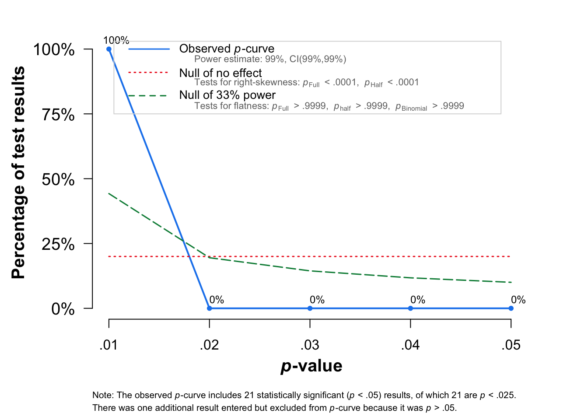

This assumes that the data has been parsed (parse-model-output.R, format-study-results.R) and preprocessed (processing.qmd).
Regression studies
Valence: Best model
library(dmetar)library(tidyverse)library(meta)R_studies <-read.csv("R_studies.csv")R_summary <-read.csv("R_summary.csv")# select regression studies with r2tmp <- dplyr::filter(R_summary,dimension=="valence")tmp <- dplyr::filter(R_studies,dimension=="valence")tmp<-drop_na(tmp)#sqrt(tmp$values) # convert from R^2 to r#tmp$stimulus_n <- 100 # ad-hoc for nowm.cor <-metacor(cor = values, n = stimulus_n,studlab = unique_id,data = tmp,fixed =FALSE,random =TRUE,sm ="ZCOR",method.tau ="REML",# could be PM (Paule-Mandel) as wellmethod.random.ci ="HK", title ="MER: Regression: Valence: Summary")print(m.cor)
Review: MER: Regression: Valence: Summary
Number of studies: k = 34
Number of observations: o = 34586
COR 95%-CI t p-value
Random effects model 0.6236 [0.5355; 0.6982] 11.19 < 0.0001
Quantifying heterogeneity:
tau^2 = 0.1367 [0.0879; 0.2480]; tau = 0.3697 [0.2964; 0.4980]
I^2 = 98.7% [98.5%; 98.8%]; H = 8.70 [8.13; 9.31]
Test of heterogeneity:
Q d.f. p-value
2496.11 33 0
Details on meta-analytical method:
- Inverse variance method
- Restricted maximum-likelihood estimator for tau^2
- Q-Profile method for confidence interval of tau^2 and tau
- Hartung-Knapp adjustment for random effects model (df = 33)
- Fisher's z transformation of correlations
Eggers' test of the intercept
=============================
intercept 95% CI t p
7.546 1.91 - 13.18 2.623 0.01323134
Eggers' test indicates the presence of funnel plot asymmetry.
Review: MER: Regression: Valence: Summary
Number of studies: k = 12
Number of observations: o = 10508
COR 95%-CI t p-value
Random effects model 0.6087 [0.5849; 0.6315] 41.99 < 0.0001
Prediction interval [0.5510; 0.6607]
Quantifying heterogeneity:
tau^2 = 0.0013 [0.0001; 0.0187]; tau = 0.0359 [0.0094; 0.1367]
I^2 = 53.8% [11.2%; 75.9%]; H = 1.47 [1.06; 2.04]
Test of heterogeneity:
Q d.f. p-value
23.79 11 0.0136
Details on meta-analytical method:
- Inverse variance method
- Restricted maximum-likelihood estimator for tau^2
- Q-Profile method for confidence interval of tau^2 and tau
- Hartung-Knapp adjustment for random effects model (df = 11)
- Prediction interval based on t-distribution (df = 10)
- Fisher's z transformation of correlations
fp <-funnel(m.cor, common =TRUE,studlab=FALSE)

Custom funnel plot
To show the quality differences between core and eliminated studies (in progress).
tmpdata <-data.frame(SE = m.cor$seTE, Zr = m.cor$TE)estimate = m.cor$TE.commonse = m.cor$seTE.commonse.seq=seq(0, max(m.cor$cor), 0.001)ll95 = estimate-(1.96*se.seq)ul95 = estimate+(1.96*se.seq)ll99 = estimate-(3.29*se.seq)ul99 = estimate+(3.29*se.seq)meanll95 = estimate-(1.96*se)meanul95 = estimate+(1.96*se)dfCI =data.frame(ll95, ul95, ll99, ul99, se.seq, estimate, meanll95, meanul95)fp =ggplot(aes(x = SE, y = Zr), data = tmpdata) +geom_point(shape =1) +xlab('Standard Error') +ylab('Zr')+geom_line(aes(x = se.seq, y = ll95), linetype ='dotted', data = dfCI) +geom_line(aes(x = se.seq, y = ul95), linetype ='dotted', data = dfCI) +geom_segment(aes(x =min(se.seq), y = meanll95, xend =max(se.seq), yend = meanll95), linetype='dotted', data=dfCI) +geom_segment(aes(x =min(se.seq), y = meanul95, xend =max(se.seq), yend = meanul95), linetype='dotted', data=dfCI) +#Reverse the x-axis ordering (se) so that the tip of the funnel will appear#at the top of the figure once we swap the x- and y-axes...scale_x_reverse(breaks=seq(0,0.2,0.05),limits=c(0.2,0))+#Specify the range and interval for the tick-marks of the y-axis (Zr);#Choose values that work for you based on your datascale_y_continuous(breaks=seq(0.3,1.25,0.25),limits=c(0.3,1.25))+# scale_x_continuous(breaks=seq(0.2,0,0.05))+#And now we flip the axes so that SE is on y- and Zr is on x-coord_flip()+#Finally, apply my APA-format theme (see code at end of post).#You could, alternatively, specify theme_bw() instead.theme_bw()
Review: MER: Regression: Valence: Summary
Number of studies: k = 12
Number of observations: o = 10508
COR 95%-CI t p-value
Random effects model 0.6087 [0.5849; 0.6315] 41.99 < 0.0001
Prediction interval [0.5510; 0.6607]
Quantifying heterogeneity:
tau^2 = 0.0013 [0.0001; 0.0187]; tau = 0.0359 [0.0094; 0.1367]
I^2 = 53.8% [11.2%; 75.9%]; H = 1.47 [1.06; 2.04]
Test of heterogeneity:
Q d.f. p-value
23.79 11 0.0136
Results for subgroups (random effects model):
k COR 95%-CI tau^2
model_class_id = Flexible Discriminants 7 0.6122 [0.5828; 0.6399] 0.0014
model_class_id = Linear Methods 4 0.6179 [0.4088; 0.7654] 0.0159
model_class_id = Random Forests 1 0.6091 [0.5831; 0.6338] --
tau Q I^2
model_class_id = Flexible Discriminants 0.0379 14.57 58.8%
model_class_id = Linear Methods 0.1262 6.67 55.0%
model_class_id = Random Forests -- 0.00 --
Test for subgroup differences (random effects model):
Q d.f. p-value
Between groups 0.05 2 0.9767
Details on meta-analytical method:
- Inverse variance method
- Restricted maximum-likelihood estimator for tau^2
- Q-Profile method for confidence interval of tau^2 and tau
- Hartung-Knapp adjustment for random effects model (df = 11)
- Prediction interval based on t-distribution (df = 10)
- Fisher's z transformation of correlations
#forest(m.cor_subgroups,subgroup=TRUE)
Idea: visualise the distributions of the model successes within studies (done in preprocessing)
Arousal: Best model
# select regression studies with r2tmp <- dplyr::filter(R_summary,dimension=="arousal")m.cor <-metacor(cor = valuesMedian, n = stimulus_n,studlab = studyREF,data = tmp,fixed =FALSE,random =TRUE,sm ="ZCOR",method.tau ="REML",# could be PM (Paule-Mandel) as wellmethod.random.ci ="HK", title ="MER: Regression: Arousal: Summary")print(m.cor)
Review: MER: Regression: Arousal: Summary
Number of studies: k = 14
Number of observations: o = 10641
COR 95%-CI t p-value
Random effects model 0.7627 [0.6819; 0.8252] 12.74 < 0.0001
Quantifying heterogeneity:
tau^2 = 0.0757 [0.0367; 0.2241]; tau = 0.2752 [0.1915; 0.4734]
I^2 = 95.3% [93.4%; 96.6%]; H = 4.59 [3.91; 5.40]
Test of heterogeneity:
Q d.f. p-value
274.29 13 < 0.0001
Details on meta-analytical method:
- Inverse variance method
- Restricted maximum-likelihood estimator for tau^2
- Q-Profile method for confidence interval of tau^2 and tau
- Hartung-Knapp adjustment for random effects model (df = 13)
- Fisher's z transformation of correlations